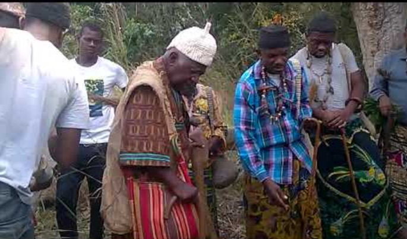
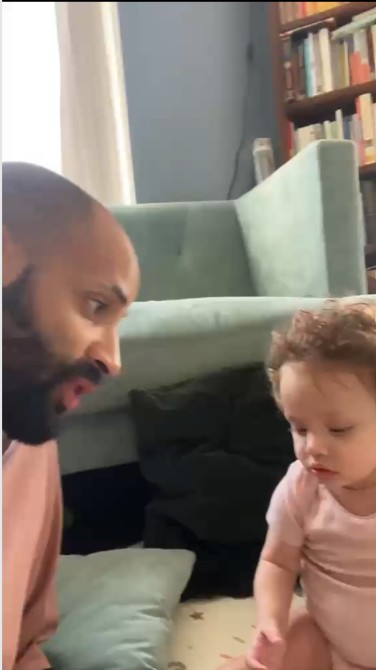
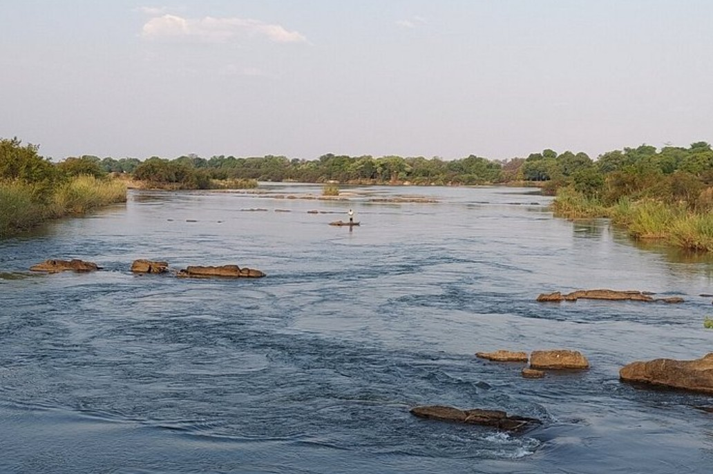
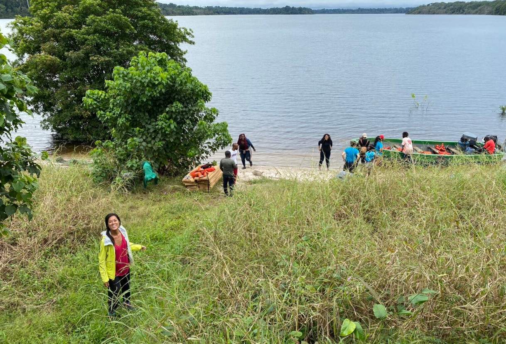

Région du Littoral · Sanaga-Maritime · Edéa 1, Cameroun
Littoral Region · Sanaga-Maritime · Edéa 1, Cameroon
Canton Yassoukou
13 Villages, Un Peuple, Une Histoire…
et le Fleuve
Canton Yassoukou
13 Villages, One People, One History…
and the River
Le peuple Yasuku, descendants de Lisukè fils de Mpoo, gardiens des rives de la Sanaga et du Wouri depuis des générations. Bienvenue sur notre mémoire vivante.
The Yasuku people, descendants of Lisukè son of Mpoo, keepers of the Sanaga and Wouri rivers for generations. Welcome to our living memory.
Les descendants de Lisukè,
peuple des rives
The descendants of Lisukè,
people of the riverbanks
Les Yasuku (aussi orthographiés Yassoukou, Yasug, ou Yasuk) sont l'un des treize clans des Elog Mpoo — le peuple Bakoko du Cameroun. Nous descendons de NGANGOHE dit LISUKE, fils de Linyima, fils de Mpoo, fondateur ancestral de toute la famille Elog Mpoo.
The Yasuku (also spelled Yassoukou, Yasug, or Yasuk) are one of the thirteen clans of the Elog Mpoo — the Bakoko people of Cameroon. We descend from NGANGOHE known as LISUKE, son of Linyima, son of Mpoo, founding ancestor of the entire Elog Mpoo family.
Installés dans l'arrondissement d'Edéa 1, département de la Sanaga-Maritime, Région du Littoral, notre canton porte le code administratif 5.3.2.3. Le préfixe Ya- dans Yasuku — comme dans Yakalak, Yawanda, Yabii — signifie en langue Bakoko « descendants de » : nous sommes le peuple de Lisuke, notre ancêtre éponyme.
Located in the arrondissement of Edéa 1, Sanaga-Maritime department, Littoral Region, our canton carries administrative code 5.3.2.3. The prefix Ya- in Yasuku — as in Yakalak, Yawanda, Yabii — means in Bakoko "descendants of": we are the people of Lisuke, our eponymous ancestor.
Six chemins vers Yassoukou
Six paths into Yassoukou

Histoire
History
De l'Égypte ancienne aux rives de la Sanaga — l'origine des Elog Mpoo, la généalogie de Mpoo et la résistance à la colonisation allemande.
From ancient Egypt to the banks of the Sanaga — the origin of the Elog Mpoo, Mpoo's genealogy, and resistance to German colonization.
Lire l'histoire → Read the history →Communauté
Community
Les 13 villages du Canton Yassoukou, la structure clanique des Elog Mpoo, et les chefs traditionnels qui gardent notre héritage.
The 13 villages of Canton Yassoukou, the clan structure of the Elog Mpoo, and the traditional chiefs who guard our heritage.
Voir la communauté → See the community →
Apprendre la langue
Learn the language
Le Yasug, dialecte nord du Kogo (Bakoko), langue bantoue de nos ancêtres. Vocabulaire, prononciation et expressions de la vie quotidienne.
Yasug, northern dialect of Kogo (Bakoko), Bantu language of our ancestors. Vocabulary, pronunciation, and expressions of daily life.
Commencer → Start learning →
Récits anciens
Ancient Stories
Les contes transmis de génération en génération autour du feu : l'origine du monde Mpoo, Ngog Lituba, et les héros de la résistance.
Tales passed down through generations around the fire: the origin of the Mpoo world, Ngog Lituba, and the heroes of resistance.
Lire les récits → Read the stories →Jeux traditionnels
Traditional Games
Minkala (Mancala), course de pirogues, jeu des 13 clans — des activités interactives pour les enfants et les familles de la diaspora.
Minkala (Mancala), canoe racing, the 13 clans game — interactive activities for children and diaspora families.
Jouer → Play now →
Diaspora & Alliés
Diaspora & Allies
La communauté Yasuku s'étend à travers la France, la Belgique, l'Amérique du Nord et au-delà. Rejoignez le réseau de préservation culturelle.
The Yasuku community extends across France, Belgium, North America and beyond. Join the cultural preservation network.
Se connecter → Connect →« Les Bakoko sont venus avec le fleuve — et le fleuve ne les a pas oubliés. »
"The Bakoko came with the river — and the river has not forgotten them."
— Proverbe Elog Mpoo / Tradition orale Bakoko
— Elog Mpoo proverb / Bakoko oral tradition
La Sanaga au cœur de tout
The Sanaga at the heart of everything
Le fleuve n'est pas seulement une frontière géographique — c'est l'âme du peuple Yasuku. Pêche, commerce, cérémonie, passage : tout commence et finit au bord de l'eau.
The river is not merely a geographic boundary — it is the soul of the Yasuku people. Fishing, trade, ceremony, passage: everything begins and ends at the water's edge.
Yasuku partout dans le monde
Yasuku across the world
La communauté Yasuku s'étend bien au-delà d'Edéa. Des communautés Bakoko importantes vivent en France, en Belgique, au Canada, aux États-Unis et à travers l'Afrique. Ce site est votre maison numérique.
The Yasuku community extends far beyond Edéa. Significant Bakoko communities live in France, Belgium, Canada, the United States, and across Africa. This site is your digital home.
Généalogie
Genealogy
Retrouvez votre place dans l'arbre généalogique des Elog Mpoo. De Mpoo à Lisukè à vous — trois générations, un fil ininterrompu.
Find your place in the Elog Mpoo genealogical tree. From Mpoo to Lisukè to you — three generations, an unbroken thread.
Musique & Chants
Music & Songs
Le Ngoso (poésie chantée), l'Ondende (poésie avec instrument à cordes), les chants du Njéé — la bande son d'une civilisation.
Ngoso (sung poetry), Ondende (poetry with strings), Njéé society chants — the soundtrack of a civilization.
Fête Mpoo
Fête Mpoo
Chaque 8 décembre, tous les clans Elog Mpoo se réunissent sur les rives de la Sanaga. La 75ème édition (2023) a vu Ekom Adrienne du Canton Yassoukou couronnée Miss Mpo'o.
Every December 8th, all Elog Mpoo clans gather on the Sanaga riverbanks. The 75th edition (2023) saw Ekom Adrienne of Canton Yassoukou crowned Miss Mpo'o.
Archives & Recherche
Archives & Research
Accédez aux sources académiques, aux archives coloniales allemandes (Bundesarchiv R 1001), et aux ressources orales de peuplesawa.com et bakoko.org.
Access academic sources, German colonial archives (Bundesarchiv R 1001), and oral resources at peuplesawa.com and bakoko.org.
« L'eau de la chute ne retourne jamais à sa source » — c'est ainsi que Mpoo, notre ancêtre, décrivait son autorité : irrévocable, comme le courant de la Sanaga.
"The water of the fall never returns to its source" — so Mpoo, our ancestor, described his authority: irrevocable, like the current of the Sanaga.
— Signification du nom MPOO : Lipoo Li Mingenda Mi Bet Ben
— Meaning of the name MPOO: Lipoo Li Mingenda Mi Bet Ben